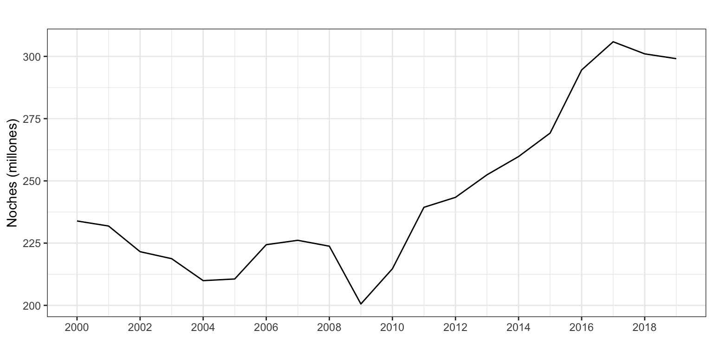
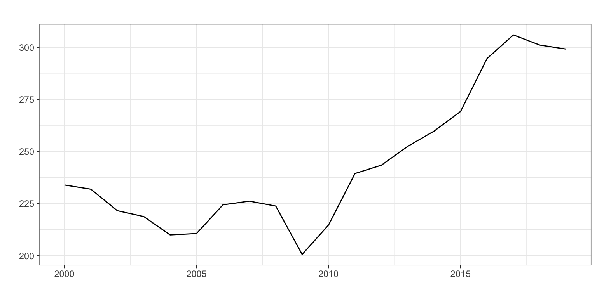
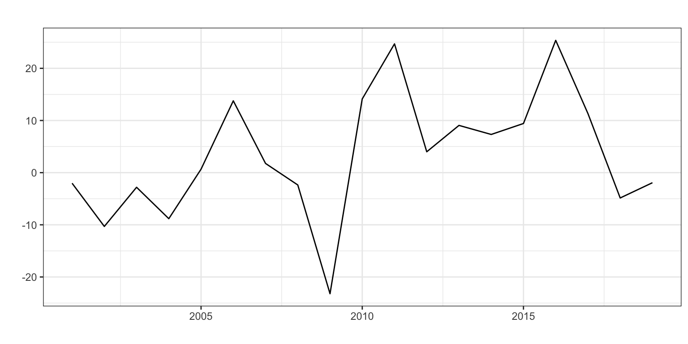
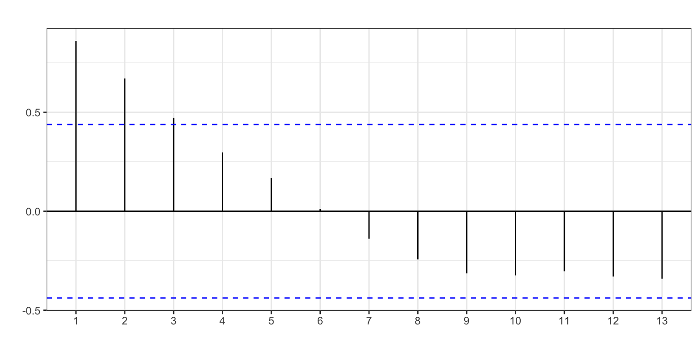
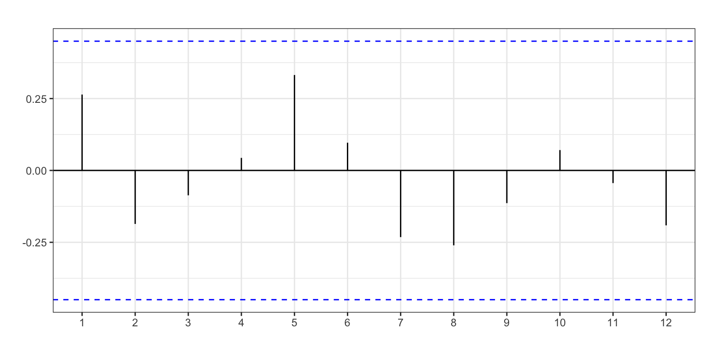
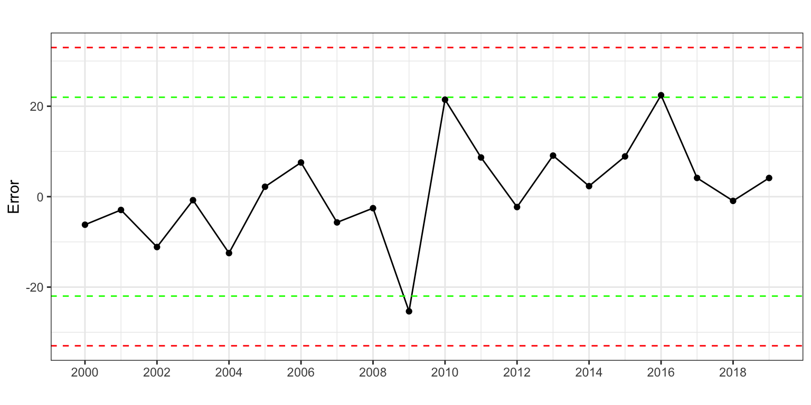
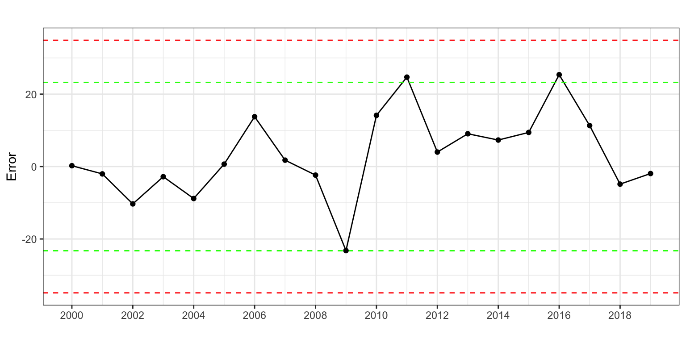
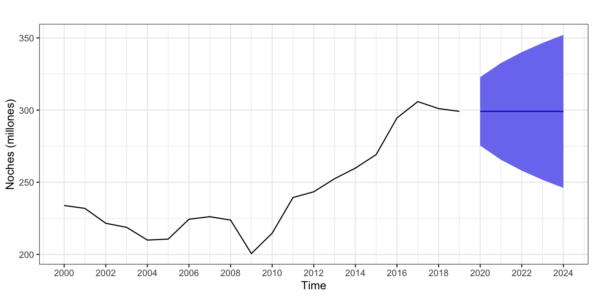

Pernoctaciones en alojamientos turísticos de turistas extranjeros
Procesos ARIMA (sin estacionalidad)
1 Introducción
Consideremos de nuevo la serie temporal correspondiente al número de pernoctaciones que los turistas extranjeros realizan en España en alojamientos turísticos autorizados (que llamaremos Pernoctaciones en adelante). Esta serie está disponible en Eurostat desde enero de 2000 hasta diciembre de 2019, un total de 20 años y 240 observaciones.
Para su análisis por modelos ARIMA sin estacionalidad vamos a anualizarla (20 años) y a dividirla por un millón para cambiar las unidades.
Pernoctaciones <- read.csv2("./series/Pernoctaciones.csv",
header = TRUE)
Pernoctaciones <- ts(Pernoctaciones[,2],
start = 2000,
frequency = 12)
Pernoctaciones <- aggregate(Pernoctaciones/10^6, FUN = sum)
autoplot(Pernoctaciones,
xlab = "",
ylab = "Noches (millones)",
main = "") +
scale_x_continuous(breaks= seq(2000, 2020, 2)) 
2 Transformación de la serie
La Figura 2 muestra una serie con tendencia y la función ndiffs (que realiza un contraste formal de estacionariedad) también indica que la serie no es estacionaria. Sin embargo, vimos que el modelo de alisado que mejor ajustaba a los datos era un modelo sin tendencia .
Ante esta situación se opta por explorar ambas opciones. Es decir, analizaremos la serie \(Pernoctaciones \sim I(0)\) así como la serie \(Pernoctaciones \sim I(1)\) y veremos cual de las dos nos ofrece mejores predicciones.
autoplot(Pernoctaciones, xlab = "", ylab = "", main = "")
autoplot(diff(Pernoctaciones), xlab = "", ylab = "", main = "")
ggAcf(Pernoctaciones, xlab = "", ylab = "", main = "")
ggAcf(diff(Pernoctaciones), xlab = "", ylab = "", main = "")



ndiffs(Pernoctaciones)[1] 1
3 Análisis de la serie Pernoctaciones \(\sim I(0)\)
En este epígrafe asumiremos que la serie Pernoctaciones es estacionaria.
3.1 Identificación
Vamos a identificar los valores de \(p\) y \(q\) a partir de auto.arima.
auto.arima(Pernoctaciones,
d = 0)Series: Pernoctaciones
ARIMA(1,0,1) with non-zero mean
Coefficients:
ar1 ma1 mean
0.8827 0.5341 253.6161
s.e. 0.1027 0.2803 24.1170
sigma^2 = 136.3: log likelihood = -77.21
AIC=162.43 AICc=165.09 BIC=166.41Se identifica un proceso ARIMA(1, 0, 1) con constante. La estimación de este modelo muestra que el coeficiente asociado al proceso autorregresivo es significativo, pero no está claro que lo sea el coeficiente de la media móvil. El análisis del error no revela ningún error que supere las 2.5 desviaciones típicas (Figura 3).
arima101 <- Arima(Pernoctaciones,
order = c(1, 0, 1),
include.constant = TRUE)
error <- residuals(arima101)
sderror <- sd(error)
autoplot(error, series="Error",
colour = "black",
xlab = "",
ylab = "Error",
main = "") +
geom_hline(yintercept = c(-3, -2, 2, 3)*sderror,
colour = c("red", "green", "green", "red"),
lty = 2) +
geom_point() +
scale_x_continuous(breaks= seq(2000, 2020, 2)) 
3.2 Validación
Variables son significativas
Los coeficientes asociados al proceso autorregresivo y la media (\(\phi_1\) y \(\mu\)) son significativos. El coeficiente de la media móvil (\(\theta_1\)) no es significativo al 5% aunque si lo sería al 10%.
# H0: phi1 = 0
wald.test(b = coef(arima101), Sigma = vcov(arima101), Terms = 1)Wald test:
----------
Chi-squared test:
X2 = 73.9, df = 1, P(> X2) = 0.0# H0: theta1 = 0
wald.test(b = coef(arima101), Sigma = vcov(arima101), Terms = 2)Wald test:
----------
Chi-squared test:
X2 = 3.6, df = 1, P(> X2) = 0.057# H0: constante = 0
wald.test(b = coef(arima101), Sigma = vcov(arima101), Terms = 3)Wald test:
----------
Chi-squared test:
X2 = 110.6, df = 1, P(> X2) = 0.0Si eliminamos el coeficiente de la media móvil y estimamos un modelo ARIMA(1, 0, 0) con constante, se puede comprobar que el nuevo modelo pierde ligeramente en calidad y presenta un ACF1 muy elevado, indicativo de que las fórmulas usadas para el cálculo del intervalo de confianza de las previsiones es incorrecto. Así, se opta por aceptar como válido el modelo ARIMA(1, 0 , 1) con constante.
Medidas de error
El error medio es 10.8 millones de pernoctaciones (RMSE) y el error porcentual medio es 3.4% (MAPE).
accuracy(arima101) ME RMSE MAE MPE MAPE MASE ACF1
Training set 1.03 10.76 8.06 0.17 3.45 0.86 0Error de previsión extra-muestral según horizonte temporal
Asumimos que se precisan diez años para hacer una buena estimación, \(k=10\), y que el horizonte temporal es tres años vista, \(h = 3\).
k <- 10
h <- 3
T <- length(Pernoctaciones)
s <- T - k - h
mapeArima101 <- matrix(NA, s + 1, h)
for (i in 0:s) {
train.set <- subset(Pernoctaciones, start = i + 1, end = i + k)
test.set <- subset(Pernoctaciones, start = i + k + 1, end = i + k + h)
fit <- Arima(train.set,
include.constant = TRUE,
order = c(1, 0, 1))
fcast <- forecast(fit, h = h)
mapeArima101[i + 1,] <- 100*abs(test.set - fcast$mean)/test.set
}
mapeArima101 <- colMeans(mapeArima101)
mapeArima101[1] 6.537726 12.420501 15.659016El error de previsión extra-muestral un periodo vista (6.5%) es notoriamente mayor que el error de estimación (3.9%). El error a dos y tres periodos vista supera el 10%.
4 Análisis de la serie Pernoctaciones \(\sim I(1)\)
En este epígrafe asumiremos que la serie Pernoctaciones no es estacionaria, pero su primera diferencia sí es estacionaria.
4.1 Identificación
Identificaremos los valores de \(p\) y \(q\) a partir de auto.arima.
auto.arima(Pernoctaciones,
d = 1)Series: Pernoctaciones
ARIMA(0,1,0)
sigma^2 = 146.4: log likelihood = -74.33
AIC=150.66 AICc=150.9 BIC=151.61Se identifica un proceso ARIMA(0, 1, 0) sin deriva, es decir un paseo aleatorio o método Ingenuo I. Tras estimar el modelo, el análisis del error revela de nuevo que no es necesaria la intervención (figura Figura 4).
arima010 <- Arima(Pernoctaciones,
order = c(0, 1, 0),
include.constant = FALSE)
arima010Series: Pernoctaciones
ARIMA(0,1,0)
sigma^2 = 146.4: log likelihood = -74.33
AIC=150.66 AICc=150.9 BIC=151.61error <- residuals(arima010)
sderror <- sd(error)
autoplot(error, series="Error",
colour = "black",
xlab = "",
ylab = "Error",
main = "") +
geom_hline(yintercept = c(-3, -2, 2, 3)*sderror,
colour = c("red", "green", "green", "red"),
lty = 2) +
geom_point() +
scale_x_continuous(breaks= seq(2000, 2020, 2))
4.2 Validación
Medidas de error
El error medio es 11.8 pernoctaciones (RMSE) y el error porcentual medio es 3.7% (MAPE). Los intervalos de confianza de las predicciones no son válidos.
accuracy(arima010) ME RMSE MAE MPE MAPE MASE ACF1
Training set 3.27 11.79 8.9 1.11 3.7 0.95 0.27Error de previsión extra-muestral según horizonte temporal
Asumimos que se precisan diez años para hacer una buena estimación, \(k=10\), y que el horizonte temporal es tres años vista, \(h = 3\).
k <- 10
h <- 3
T <- length(Pernoctaciones)
s <- T - k - h
mapeArima010 <- matrix(NA, s + 1, h)
for (i in 0:s) {
train.set <- subset(Pernoctaciones, start = i + 1, end = i + k)
test.set <- subset(Pernoctaciones, start = i + k + 1, end = i + k + h)
fit <- Arima(train.set,
include.constant = FALSE,
order = c(0, 1, 0))
fcast <- forecast(fit, h = h)
mapeArima010[i + 1,] <- 100*abs(test.set - fcast$mean)/test.set
}
mapeArima010 <- colMeans(mapeArima010)
mapeArima010[1] 5.095108 8.957097 11.429987El error de previsión varia entre el 5.1% a un periodo vista y el 11.4% a tres periodos vista.
5 Comparativa entre modelos
Si atendemos a los indicadores de calidad de ajuste de ambos modelos, todos apuntan al proceso ARIMA(1, 0, 1) como el que mejor ajusta a los datos. El error medio (RMSE) y el error relativo (MAPE) para ARIMA(1, 0, 1) es algo inferior que para el modelo ARIMA(0, 1, 0). Además, el modelo ARIMA(1, 0, 1) tiene menos sesgo en las predicciones y las formulas usadas para las previsiones por intervalo son adecuadas.
accuracy(arima101) ME RMSE MAE MPE MAPE MASE ACF1
Training set 1.03 10.76 8.06 0.17 3.45 0.86 0accuracy(arima010) ME RMSE MAE MPE MAPE MASE ACF1
Training set 3.27 11.79 8.9 1.11 3.7 0.95 0.27Por el contrario, si atendemos a los errores de previsión extra-muestrales, el mejor proceso es ARIMA(0,1,0).
mapeArima101[1] 6.54 12.42 15.66mapeArima010[1] 5.10 8.96 11.43Otro ejemplo más en el que mejor ajuste no implica mejor predicción. En este caso el modelo AR(1, 0, 1) sobreajusta (overfitting) los datos y genera peores predicciones a corto y medio plazo.
Concluimos que el mejor modelo con propósitos predictivos es \(Pernoctaciones \sim ARIMA(0, 1, 0)\).
Nota: Es la tercera vez que el método Ingenuo I (paseo aleatorio) aparece como el más adecuado para predecir la serie anual de pernoctaciones. Era el mejor de entre los métodos simples. Al elegir dentro de la familia de Alisado Exponencial, también fue el mejor. Ahora, es el proceso ARIMA más adecuado. Para esta serie, que es corta y aparentemente sencilla, ninguna aproximación compleja mejora el método Ingenuo I, más fácil de obtener e interpretar.
6 Interpretación del modelo
El proceso es un paseo aleatorio (Ingenuo I) \(Pernoctaciones \sim ARIMA(0, 1, 0)\): \[(1 - L) Pernoctaciones_t = \varepsilon_t\] o \[Pernoctaciones_t = Pernoctaciones_{t-1} + \varepsilon_t.\]
El modelo estimado queda: \[\widehat{Pernoctaciones}_t = Pernoctaciones_{t-1}.\]
Cada año el número de pernoctaciones previsto es el mismo que el del año previo.
7 Predicción
Podemos usar el modelo estimado para predecir las pernoctaciones para los próximos 5 años.
parima010 <- forecast(arima010,
h = 5,
level = 95)
parima010 Point Forecast Lo 95 Hi 95
2020 299.0921 275.3749 322.8094
2021 299.0921 265.5508 332.6334
2022 299.0921 258.0126 340.1717
2023 299.0921 251.6576 346.5267
2024 299.0921 246.0587 352.1256autoplot(parima010,
ylab = "Noches (millones)",
main = "") +
scale_x_continuous(breaks= seq(2000, 2024, 2)) 